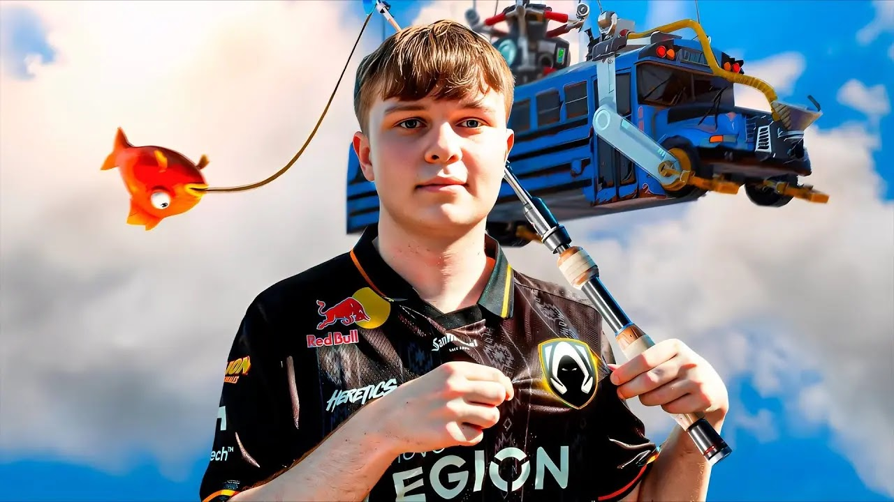
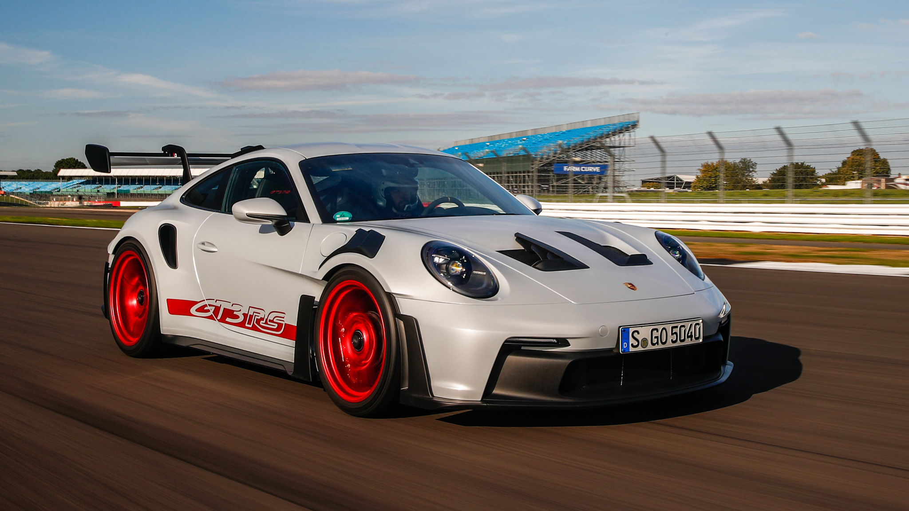
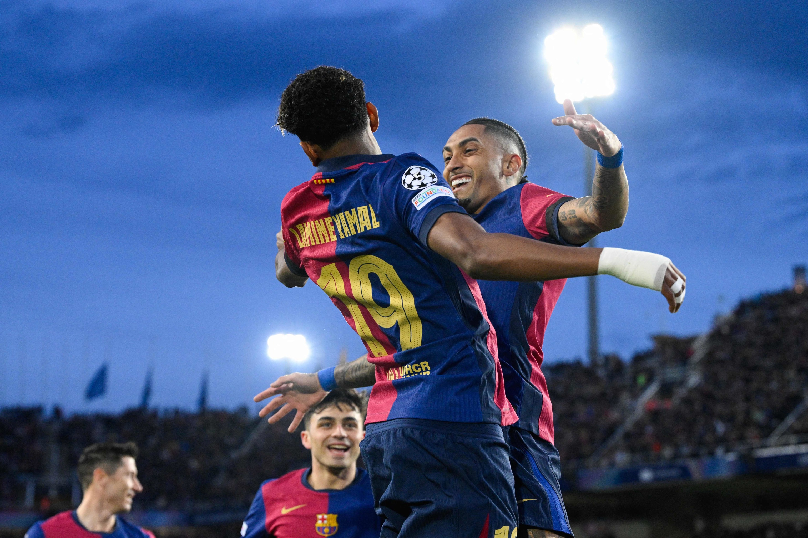

Sobre mi
Hola, sóc Uriel, estudiant del Cirvianum i apassionat de la tecnologia, el disseny i el desenvolupament web. M’agrada crear projectes, aprendre llenguatges nous i millorar cada dia.
Les meves aficions
Gaming competitiu
Jugo sobretot a Fortnite. Vaig començar fa anys i competeixo regularment. M’agrada millorar mecàniques, aim i estratègia.
Disseny i marca personal
Treballo en la marca UNKNWN NOIR, creant contingut, visuals i estètica formal i exclusiva. Ho faig cada setmana.
Programació
Estic aprenent Java, HTML, CSS i Git. Vaig començar aquest any i practico gairebé cada dia amb exercicis i projectes.
Les meves aficions

Gaming competitiu
Jugo sobretot a Fortnite. Vaig començar fa anys i competeixo regularment. M’agrada millorar mecàniques, aim i estratègia.

Disseny i marca personal
Treballo en la marca UNKNWN NOIR, creant visuals, estètica formal i exclusiva, i contingut per xarxes. Ho faig cada setmana.

Programació
Estic aprenent Java, HTML, CSS i Git. Vaig començar aquest any i practico gairebé cada dia amb exercicis i projectes.